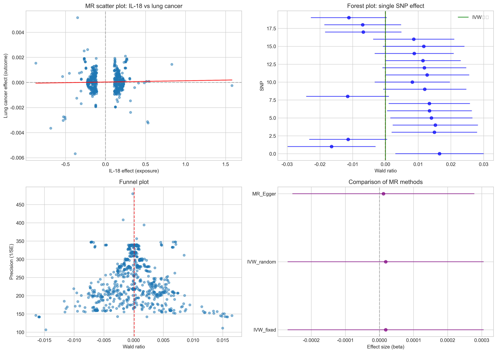

分析时间: 2026-02-11 20:35:47
| 方法 | 效应值 (beta) | 标准误 | P值 | 95% CI | SNP数量 |
|---|---|---|---|---|---|
| IVW_fixed | 0.0000 | 0.0001 | 9.0137e-01 | [-0.0003, 0.0003] | 736 |
| IVW_random | 0.0000 | 0.0001 | 9.0137e-01 | [-0.0003, 0.0003] | 736 |
| MR_Egger | 0.0000 | 0.0001 | 9.3246e-01 | [-0.0003, 0.0003] | 736 |
以下图表展示了MR分析结果：
❌ 主要发现: 未发现IL-18对肺癌风险的显著因果效应 (P = 9.0137e-01)
分析方法: Python MR分析 (自定义实现)
包括方法: IVW (固定/随机效应), MR-Egger, 加权中位数
敏感性分析: 异质性检验, 留一法, 漏斗图检验